Topic Cover:
HTMLThe First Principle (The Fundamental Truth): Structure and Presentation are two separate concerns. HTML is for defining the meaning and structure of content (a heading, a list, a paragraph). It is not for defining how that content looks.
The Core Problem: For years, people tried to style websites using only HTML (e.g., <font color="red">, <body bgcolor="blue">). This was a disaster. Why?
It was Inefficient: If you wanted to change the color of all 100 headings on your website, you had to manually edit all 100 <h1> tags.
It was Inflexible: HTML provided very few styling options.
It was Unreadable: The HTML file became a messy soup of structure and style tags, making it impossible to maintain.
The Logical Solution: Create a completely separate language whose only job is to describe presentation (style and layout). This language needs a way to target HTML elements from a central location and apply styles to them. This language is CSS (Cascading Style Sheets). This is the core concept of Separation of Concerns.
The First Principle: We need a way to connect our CSS rules to our HTML document.
The Core Problem: Where should we write these new CSS rules? Should they go right inside the HTML tag? Somewhere else in the HTML file? Or in a completely separate file? Each approach has its own use case.
The Logical Solution: Let's explore the three possibilities, from most specific to most general.
Inline CSS (The style attribute): The most direct method. You add a style attribute directly to a single HTML tag.
Why? To apply a unique style to one specific element.
Example: <h1 style="color: blue;">My Blue Heading</h1>
Conclusion: Good for quick tests or very specific overrides, but it defeats the purpose of "Separation of Concerns" if used too much.
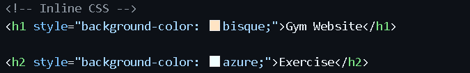
Internal CSS (The <style> tag): A good middle ground. You place a <style> tag inside the <head> of your HTML document.
Why? To write all the CSS rules for one specific HTML page in a single place.
Example: <head><style> h1 { color: blue; } </style></head>
Conclusion: Good for single-page applications or components, but the styles are not reusable across different pages.
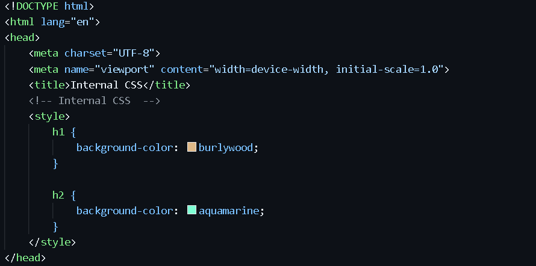
External CSS (The <link> tag): The professional standard. You create a completely separate file (e.g., styles.css) and link to it from your HTML file using the <link> tag in the <head>.
Why? To create one central stylesheet that can be used by your entire website. Change a rule in this one file, and every page on your site updates instantly.
Example: <head><link rel="stylesheet" href="styles.css"></head>
Conclusion: This is the best practice and the ultimate expression of Separation of Concerns.
The First Principle: We need a simple, predictable syntax for writing a style rule.
The Core Problem: How do we tell the browser which element we want to style and what we want to change about it?
The Logical Solution: Invent a clear, human-readable syntax.
selector { property: value; }
Selector (h1): The "who." This is the part that targets the HTML element.
Declaration Block ({...}): The curly braces that contain all the style rules for that selector.
Property (color): The "what." The specific visual characteristic you want to change.
Value (blue): The new setting for that property.
Semicolon (;): The separator. It tells the browser that one declaration has ended and the next may begin.
This is the most basic and broadest selector. It targets every single HTML element of a specific type on the page.
Syntax: Just the name of the HTML tag (without the < > brackets).
Purpose: To set a default, base style for all elements of a certain kind. It's great for establishing a consistent look and feel for your entire website.
Example:
You want every single paragraph on your entire website to have a dark gray text color and a standard line height.
CSS
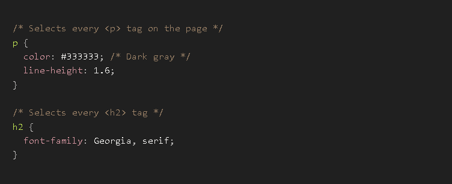
HTML
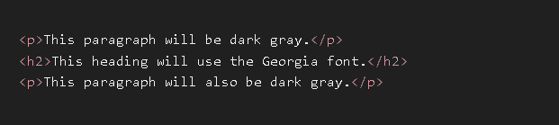
Output
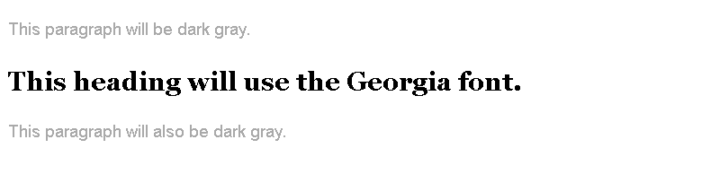
This is the most common and versatile selector. It targets all elements that have a specific class attribute.
Syntax: A dot (.) followed by the class name.
Purpose: To create reusable styles that you can apply to any element, regardless of its tag type. An element can also have multiple classes. This is the workhorse of CSS.
Example:
You want to create a reusable style for warning messages that makes them red and bold. You also want a style for "highlighted" text.
CSS
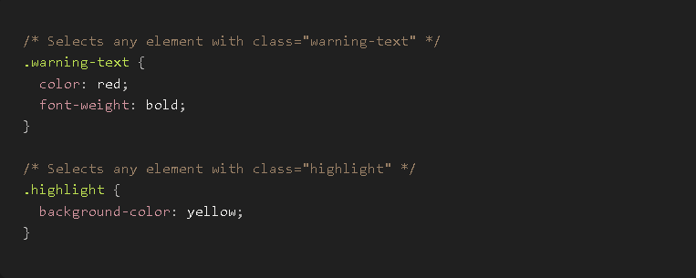
HTML
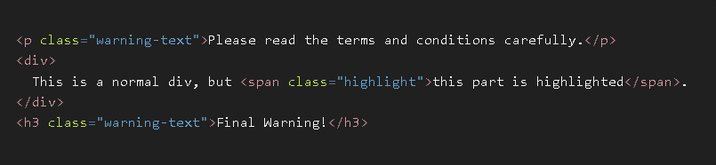
Output
This is the most specific selector. It targets the one and only one element that has a specific id attribute. Remember, an id must be unique on a page.
Syntax: A hash symbol (#) followed by the ID name.
Purpose: To style a single, unique, major element on your page, like the main logo, the primary navigation bar, or the main content area.
Example:
You want to style the main header of your website, and there is only one.
CSS
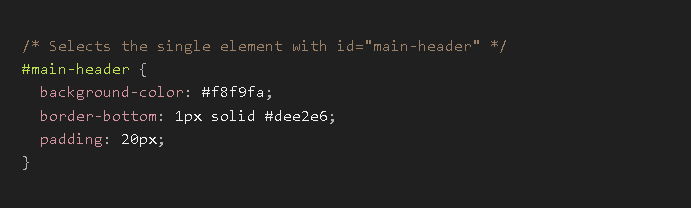
HTML
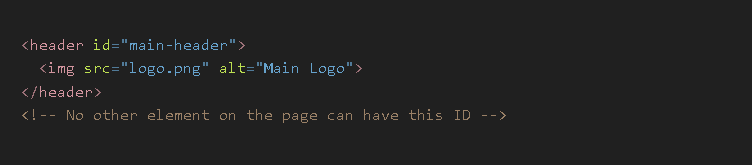
This isn't a new type of selector, but a syntax trick to make your code more efficient. It allows you to apply the same set of styles to multiple different selectors at once.
Syntax: A comma (,) separating each selector.
Purpose: To avoid repeating the same CSS code. This is known as making your code DRY (Don't Repeat Yourself).
Example:
You want your <h1>, <h2>, and <h3> headings to all share the same font and color.
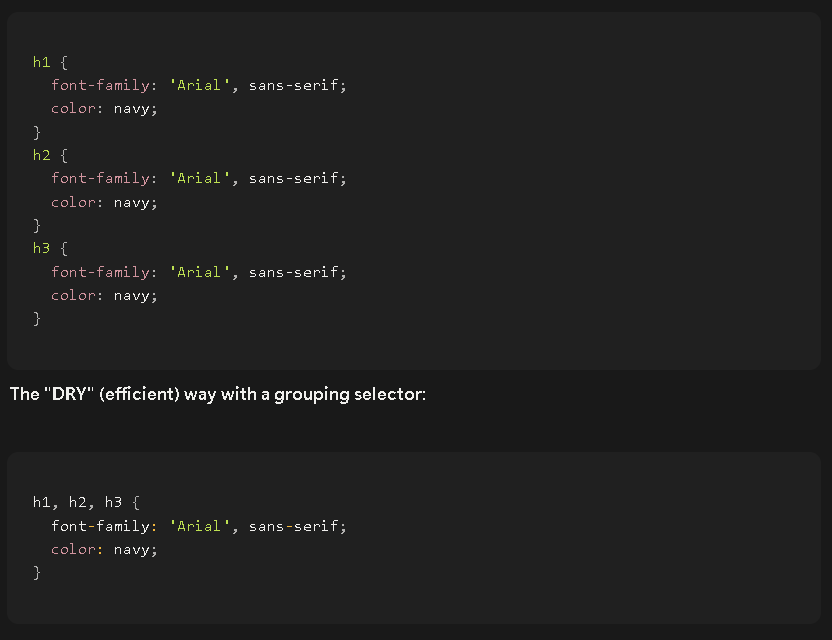
Digital Screens Create Color by Mixing Light
This is the most fundamental truth. Unlike paint, which works by subtracting light, a digital screen (on your phone, monitor, or TV) is a dark surface that emits light.
Every color you see on a screen is created by mixing three primary colors of light: Red, Green, and Blue (RGB). Every single pixel on your screen is made up of tiny red, green, and blue sub-pixels that can be turned on
or off at different intensities.
No Light (All off): The pixel is Black.
Full Red, Full Green, Full Blue (All on high): The lights mix to create pure White.
Full Red, No Green, No Blue: The pixel is pure Red.
Equal parts Red and Green, No Blue: The pixel is Yellow.
The Core Problem
How do we, as developers, tell the computer the exact "recipe" of Red, Green, and Blue light we want for a specific color? We need a standardized, precise way to define a color.
The Problem: Remembering complex number combinations is hard. We need a simple, human-readable way to refer to common colors.
The Solution: Create a predefined list of color names that the browser will automatically understand.
The Syntax: Just the name of the color.codeCSS
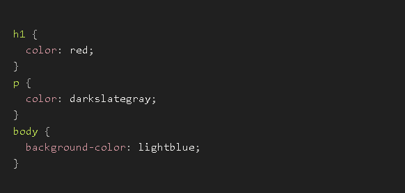
The Limitation: This is great for beginners and for very common colors, but it's not very precise. There are only about 140 named colors. What if you need a specific shade of blue that isn't in the list? You have no control.
The Problem: We need a compact, precise way to define any one of the 16.7 million colors a standard screen can display.
The Solution: Use the RGB model directly, but write it in a different number system called hexadecimal (base-16). In hexadecimal, we count from 0 to 9, and then use letters A to F for the numbers 10 to 15. This allows us to represent a large number with fewer digits.
The Syntax: A hash symbol (#) followed by six characters (RRGGBB).
The first two characters represent the amount of Red.
The next two represent the amount of Green.
The last two represent the amount of Blue.
The values range from 00 (0, no light) to FF (255, full intensity).
Examples:
#FF0000: Full Red (FF), no Green (00), no Blue (00) --> Pure Red.
#00FF00: Full Green, no others --> Pure Green.
#000000: No light of any color --> Black.
#FFFFFF: Full intensity of all colors --> White.
#333333: A low, equal amount of all three --> Dark Gray.
#E0B0FF: A lot of Red, a medium amount of Green, and full Blue --> A shade of Lavender.
Shorthand: If all three pairs of digits are the same (e.g., #FF00CC), you can use a three-digit shorthand (#F0C). #333 is the same as #333333.
Conclusion: This is the most common and widely used color system on the web. It's precise, compact, and universally understood.
The Problem: Hex codes can be a bit cryptic. What if we want to write the color recipe using the familiar decimal numbers (0-255)? Also, how do we make a color semi-transparent?
The Solution: Create a CSS function rgb() that takes three arguments for Red, Green, and Blue. Then, create an extended version, rgba(), that adds a fourth argument for Alpha (transparency).
The Syntax:
rgb(red, green, blue): Each value is a number from 0 to 255.
rgba(red, green, blue, alpha): The alpha value is a number from 0 (completely transparent) to 1 (completely opaque). 0.5 is 50% transparent.
Examples:
rgb(255, 0, 0): Same as #FF0000 --> Pure Red.
rgb(0, 0, 0): Same as #000000 --> Black.
rgba(0, 0, 0, 0.5): A semi-transparent black. If you put this on a
rgba(255, 0, 0, 0.2): A very light, 20% opaque red.
Conclusion: RGBA is extremely powerful and is the standard way to create transparent colors, which are essential for modern UI design (like overlays, pop-ups, and subtle background effects).
The Problem: While RGB is how computers think about color, it's not how humans do. If you have a specific blue and you want to make it slightly darker or less vibrant, it's hard to guess which of the R, G, and B values
to change.
The Solution: Create a color model that is more intuitive for humans: HSL (Hue, Saturation, Lightness).
Hue: The pure color itself. This is a degree on the color wheel (0-360). 0 is red, 120 is green, 240 is blue.
Saturation: The intensity or vibrancy of the color. This is a percentage (0% to 100%). 0% is gray, 100% is the most vivid version of the color.
Lightness: The brightness of the color. This is a percentage (0% to 100%). 0% is black, 50% is the normal color, and 100% is white.
The Syntax: hsl(hue, saturation, lightness) and hsla() for transparency.
Examples:
hsl(0, 100%, 50%): A fully saturated, normal lightness red.
hsl(0, 100%, 25%): The same red, but darker (25% lightness).
hsl(0, 50%, 50%): The same red, but less vibrant (50% saturation), making it look faded.
hsla(240, 100%, 50%, 0.5): A semi-transparent pure blue.
Conclusion: HSL is the favorite of many designers and developers because it makes it incredibly easy to create color palettes. You can pick a base hue (e.g., your brand's blue at 240) and then easily create lighter,
darker, or less saturated variations of it just by changing the S and L values.
Text is More Than Just Characters
The fundamental truth is that the text you see on a webpage is not just a sequence of letters. It has a distinct visual appearance, just like text in a book or a magazine. This appearance is defined by its typeface (the design of the letters), its size, its weight (boldness), and its style (like italics).
The Core Problem
How do we, as developers, gain precise control over these visual characteristics of our text? HTML gives us the content (<p>Hello World</p>), but we need a system in CSS to define its typography.
The Logical Solution: A Family of font- Properties
The solution is to create a group of specific CSS properties, all starting with the prefix font-, that each control one distinct aspect of the text's appearance.
The Problem: The default font a browser uses is often boring (like Times New Roman) and varies between operating systems. We need to choose a specific typeface to match our website's design.
The Solution: The font-family property. It lets you specify a prioritized list of fonts for the browser to use.
The Syntax: font-family: "Font 1", "Font 2", generic-family;
How it Works (The Font Stack):
The browser reads your list from left to right.
It first tries to find "Font 1" on the user's computer. If it's there, it uses it and stops.
If not, it looks for "Font 2". If it finds it, it uses it.
If it can't find any of your specified fonts, it will fall back to its default font for the generic-family.
The Five Generic Families (The Critical Fallback):
You must always end your font-family list with one of these generic keywords.
serif: Fonts with small decorative strokes on the letters (like Times New Roman, Georgia). Good for long-form reading.
sans-serif: Fonts without strokes (like Arial, Helvetica, Verdana). Clean and modern, good for headings and UI.
monospace: Fonts where every character has the exact same width (like Courier New). Essential for displaying code.
cursive: Fonts that look like handwriting.
fantasy: Decorative, stylized fonts.
Example
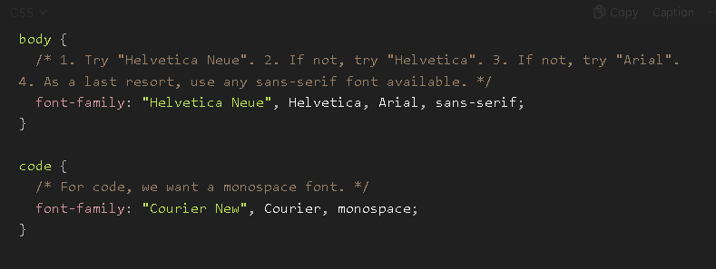
The Problem: We need to control how big or small our text is. Headings should be large, and fine print should be small.
The Solution: The font-size property.
The Syntax: font-size: value;
Common Units for font-size:
px (Pixels): An absolute, fixed-size unit. font-size: 16px; means the text will be exactly 16 pixels tall. Good for consistency, but less flexible for users who want to change their browser's default font size.
em: A relative unit. 1em is equal to the font size of the parent element. If a parent <div> has a font-size of 16px, then font-size: 2em; on a child <p> will make it 32px (16 * 2).
rem (Root Em): The modern standard. This is the most flexible and recommended unit. 1rem is equal to the font size of the root element. This allows you to set a base font size on the <html> tag, and then all your other font sizes can be relative to that one single value, making it incredibly easy to scale your entire site's typography.
Example
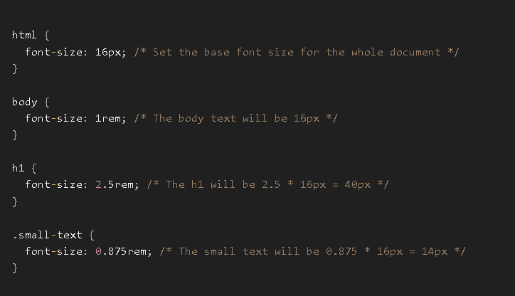
The Problem: We need to control the thickness or "weight" of the font's strokes to create emphasis.
The Solution: The font-weight property.
The Syntax: Can use keywords or numerical values.
Common Values:
normal: The default weight (same as the number 400).
bold: A thick weight (same as the number 700).
Numerical Values: Many modern fonts come with multiple weights. You can specify them with numbers from 100 (Thin) to 900 (Black/Heavy). The availability of these weights depends on the font file itself.
300: Light
400: Normal/Regular
600: Semi-Bold
700: Bold
900: Black/Heavy